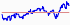
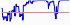
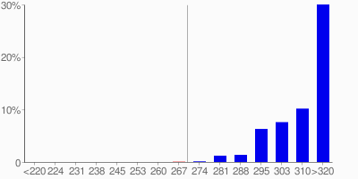
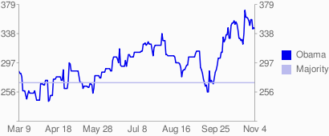
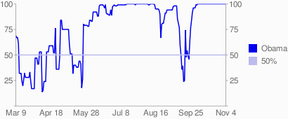
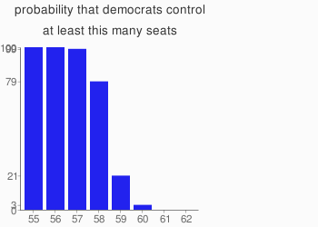
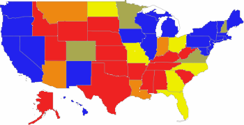

final prediction vs. mccain
| Obama's expected votes |
327.3 |  |
| electoral votes, standard deviation |
21.6 | |
electoral votes, if candidates win the
states where they are ahead in the poll |
306.5 | |
Needed to win: 270 votes; last update: 2008-11-05 00:11:01 |
|
| Obama's winning probability |
99.9% |  |
| But if obama loses ... | | |
| ... Colorado, Florida, Ohio and Virginia |
88.8% | |
| ... CO,FL,OH,VA,NV,MO,and NC |
46.1% | |
| |
| if the bradley effect is | | |
| ...3% in every state |
259.3 votes, prob 16.9% |
| ...2% in every state |
306.5 votes, prob 62.8% |
| |
| prob. from intrade.com |
90.2% | |
| (pivotal state: New Mexico - using a methodology suggested by noteconomics) |
| |
| Electoral votes distribution |
mccain wins
obama wins
|

trends
expected number of electoral votes

probability of winning

The 2004 site in the press
interesting election links
democratic senate
expected democratic senate seats: 58.02

Lieberman counted as democrat
obama vote shares

<47%
47-49%
49-51%
51-53%
>53%
site news
11/03/08 now updating every hour
however, the row regarding the bradley effect is only updated manually.
11/03/08 bradley effect added
simulating what would happen in my simulaitons if every state experienced a 2% or 3% "bradley effect", that is if polls overestimated obama's share by 2 or 3%. David Stromberg estimates here the bradley effect to be between 2 to 3% in a set of recent elections.
10/17/08 senate added
wanted to do that for a long time :-)
10/17/08 I have added
a worst-case scenario for obama, in which he loses 7 pivotal states where McCain is concentrating campaigning efforts. Karl Rove wrote an article about that, he's right that this is a possibility for McCain, even if quite remote.
09/15/08 an overview of political prediction models
from Josep Colomer's blog
09/06/08 Florida added
to the conditional probs... somehow it didn't make the first cut
08/27/08 i added more interesting conditional probabilities
including obama losing more pivotal states. I am now reporting only if they differ from the main statistics by more than 15%. Suggestions for more welcome!
08/26/08 new colors on the chart map
much more readable now. Unfortunately the google chart api only lets me interpolate between 3 colors, so I can't do much better than this.
Sort by Date
Title